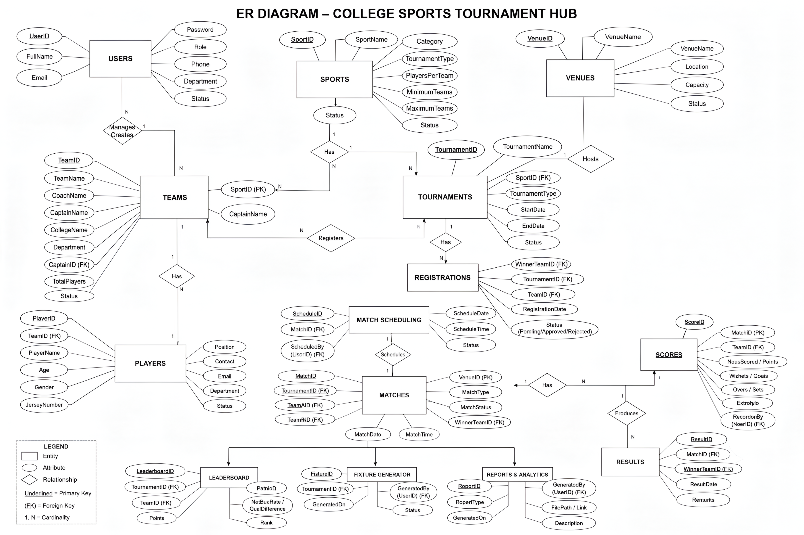
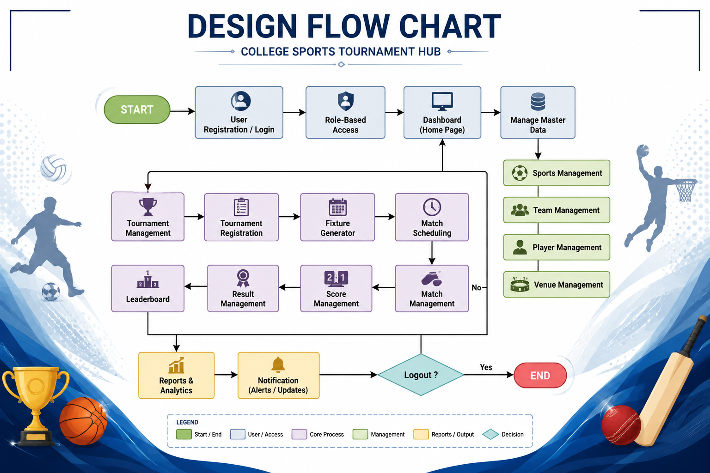

User Management
User records, registration and account-related operations.
A menu-driven Java application designed to centralize college sports tournament administration, from team and player records to matches, scores and leaderboard data.
College Sports Tournament Hub is a Java-based academic project developed to organize sports administration through a centralized application connected to a MySQL database.
The project combines object-oriented programming, JDBC, database operations and Java collections to manage records for sports, teams, players, tournaments, venues, registrations, matches and scores.
One structured system for managing the information behind college sports tournaments.
The project presentation outlines the following management areas for a centralized sports system.
User records, registration and account-related operations.
Sports information, tournament types and player limits.
Team details, college information, coaches and captains.
Player records and association with teams.
Tournament details, sports, venues and status.
Team registration and registration status management.
Venue details, capacity and location records.
Match records, participating teams and match status.
Score records and match-related score information.
Team standings and tournament points information.
A fixture-generation component shown in the project design.
A reporting component represented in the system design.
Module names reflect the project presentation and design. Individual module availability may depend on the delivered application implementation.
The project brings together core programming concepts with relational database management.
Object-oriented programming, methods, packages and exception handling.
Relational data storage and Java Database Connectivity for database operations.
Java collections applied to record storage, processing and lookup operations.
ArrayListUser and player recordsLinkedListTeam managementQueueTournament processingStackMatch historyHashMapVenue lookupThe original project presentation includes a database ER diagram and a system design flowchart. Both are included here as project documentation.
The diagram maps entities such as users, sports, teams, players, tournaments, venues, registrations, matches, scores, results and leaderboard records.

Open full-size diagram ↗The flowchart presents the intended relationship between master-data management, tournament registration, scheduling, matches, scores, results and leaderboard operations.

Open full-size flowchart ↗These are the original presentation visuals. The flowchart documents the proposed workflow and should not be read as a screenshot of the console application.
Web-based platform
↗Mobile application
↗Live scores and analytics
↗Smart notifications
↗Expanded multi-user access
↗Cloud integration
↗Interested in the project or looking to build a website for your business?